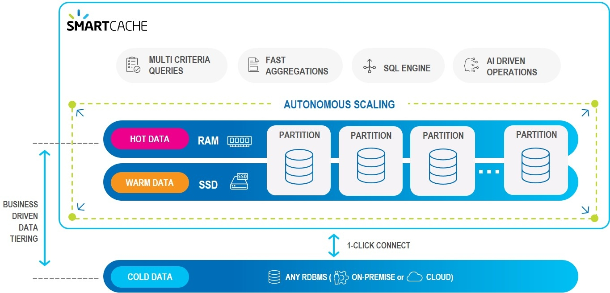

SmartCache provides fast, scalable cache from any data store.
The SmartCache environment can be illustrated as follows:

Here are some of the detailed technologies that make SmartCache smart.
SmartCache's Ops Manager GUI provides built-in connectors to the most popular databases:
Database tables can be imported as-is, or can be limited to selected columns and other properties using the Ops Manager GUI, and without writing custom code.
Data can be stored on-prem, in the cloud, or a hybrid combination of cloud and on-prem.
User-defined business rules allows you to place the most important data in "hot" storage (RAM), while other data can be in "warm" (SSD) or "cold" (HD) storage.

"Important" does not necessarily mean "most frequently accessed" — for example, your business rules may place premium customers in hot storage, even if their data is less frequently required.
Distributed server-side data aggregation and code co-location peovides high concurrency, full data integrity and reduces networking and serialization overhead.

Unlike simple key-value data stores, SmartCache uses secondary, tertiary, ... n-ary indexes to organize your data.
This means that where a key-value approach would duplicate the entire data store for each defined index, SmartCache allows a virtually unlimited number of indexes to be maintained — with very little RAM or processing overhead.

User-defined rules can automatically scale up/down or scale out/in when system demands change.
For example a rule could state:
When the RAM in use exceeds 80% of the total currently allocated RAM for more than 2 minutes, scale up the RAM by a factor of 4.
Rules can also be time-dependent, for example automatically changing storage allocations before and after Black Friday or other times when unusual transaction volumes may occur.
Using
SmartCache supports the full SQL-99 standard, allowing complex queries to be performed with optimal speed and minimal memory footprint. Custom SDK calls that use standard SQL requests can be handled without requiring source code changes.